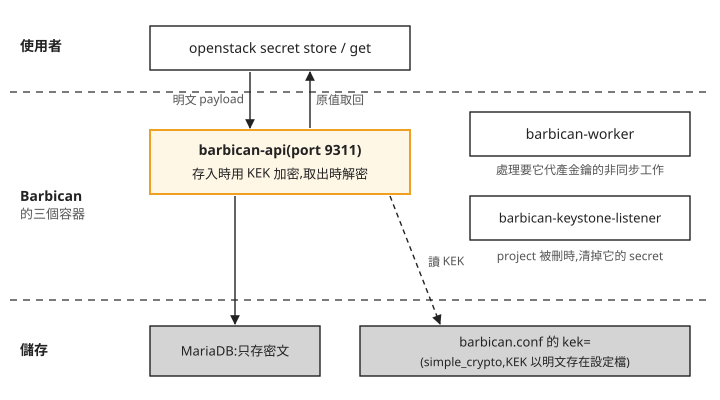
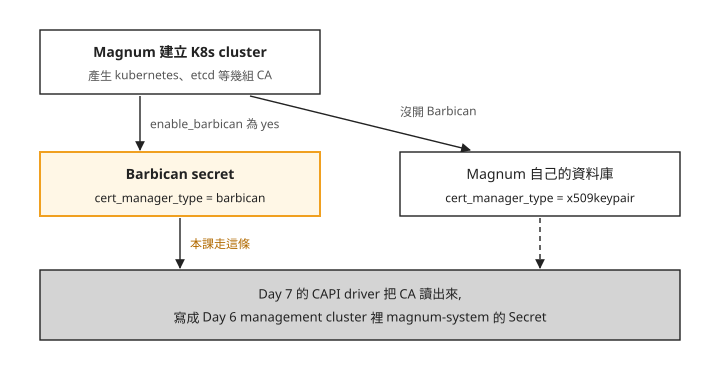
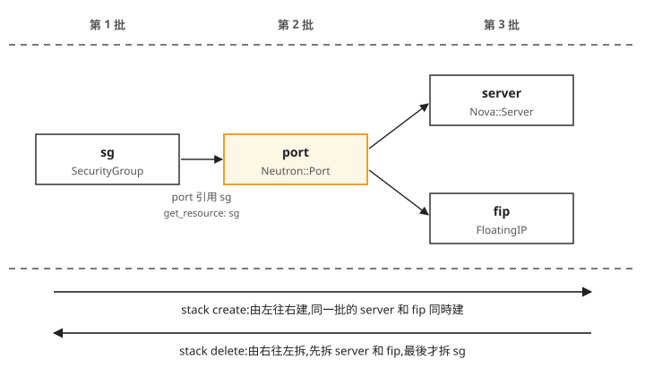

Day 5: Barbican 與 Heat——把秘密交給雲保管,用一份範本建立和刪除一組資源¶
Day 2 為了開一台能從外面 SSH 進去的 VM,你照順序打了十幾條指令:建網路、建 router、開 security group、開機、掛 floating IP,順序錯了就會報錯;要清掉時,還得反過來一條條刪。再往後看,Day 7 的 Magnum 開 Kubernetes cluster 時,會替每座 cluster 產生幾把 CA 私鑰,這些私鑰得放在雲上某個有加密、有權限控管的地方。
這一章各解決一件事。前半部開啟 Barbican,把一筆秘密存進去再原樣取回,並看它在資料庫裡怎麼保存;後半部用已經部署好的 Heat,把 Day 2 那組資源寫成一份範本,一個指令建好、一個指令拆光。讀完之後,看到一份 Heat 範本,你能說出它會用什麼順序建立和刪除資源、哪些資源會同時建;遇到要存密碼或私鑰的需求,也能判斷 Barbican 預設的加密方式擋得住哪種外洩、擋不住哪種。
秘密要放在哪裡¶
寫過應用程式的人都遇過這個問題:資料庫密碼、API 金鑰要放哪?寫在程式碼裡會跟著進 git,寫在設定檔裡,任何能登入那台主機的人都讀得到。
Barbican 是 OpenStack 的金鑰管理服務,服務類型(service type)叫 key-manager。它專門保管這類資料:你交給它一筆秘密,它加密後存進資料庫,之後預設只有同一個 project 裡、有權限的使用者能取回(Barbican 也可以用 ACL 把某筆 secret 開放給其他使用者)。權限由 Keystone 判斷,跟其他 OpenStack 資源一樣。在 Barbican 裡,一筆被保管的資料叫 secret,內容可以是一段密碼、一把對稱金鑰,或憑證和私鑰。AWS 上對應的服務是 Secrets Manager。
Kolla 預設不部署 Barbican,所以第一步是把它開起來。
步驟 1:開啟 Barbican,存一筆 secret 再取回¶
下面這個區塊照註解的編號分成三段:
- 開啟 Barbican:
globals.yml裡的enable_barbican預設是"no"(範例檔裡是一行註解),在檔尾補一行"yes"。 - 只部署 Barbican:Day 3 加 Cinder 時重跑的是完整的
kolla-ansible deploy。這次加上--tags,Ansible 只執行標了這些 tag 的任務,其他已經在運作的服務不會被碰到,跑起來也比較快。barbican這個 tag 已經包含建 Barbican 的資料庫、向 Keystone 登記 API 位址(endpoint),以及 haproxy 裡 barbican 那一段設定。loadbalancer這個 tag 是給有 haproxy 的環境用的;本課 Day 1 關了 haproxy 和 proxysql,這部分會被跳過,加不加都沒有影響。barbican-api 直接聽在主機 IP 的 9311 port。 - 驗證並存取一筆 secret:確認服務清單裡出現
key-manager,然後存一筆名為day5-demo的 secret,記下它的位址(Barbican 稱為 secret href,是一個指向這筆 secret 的網址),再用這個位址把原文取回來。
第 3 段的 pip install python-barbicanclient 不能省。openstack 指令本身只內建核心服務的子命令,openstack secret ... 屬於 Barbican 自己的 client 套件,要另外安裝才會出現;這類掛進 openstack 指令的擴充套件叫 osc plugin。Day 4 另外裝 python-octaviaclient 也是同樣的原因。
# 1. globals.yml 開 barbican(預設 #enable_barbican: "no")
echo -e '\n# Day 5: enable Barbican (secret/cert store for Magnum)\nenable_barbican: "yes"' \
| sudo tee -a /etc/kolla/globals.yml
# 2. targeted deploy(--tags barbican 已自帶:建 DB(bootstrap.yml)、註冊 keystone
# endpoint(register.yml)、barbican 的 haproxy frontend(site.yml 內 barbican 的
# loadbalancer 子任務掛在 barbican tag);加 loadbalancer 確保 haproxy reload)
source ~/kolla-venv/bin/activate
kolla-ansible deploy -i ~/all-in-one --tags barbican,loadbalancer
# 3. 驗證 + secret 存取往返
source /etc/kolla/admin-openrc.sh
openstack service list | grep key-manager # 出現 barbican / key-manager
pip install python-barbicanclient # osc plugin 不隨 openstackclient
SREF=$(openstack secret store --name day5-demo --payload 'Sup3rS3cretDemo!' \
-c 'Secret href' -f value)
openstack secret list
openstack secret get "$SREF" --payload -f value # 應原值取回 Sup3rS3cretDemo!
跑完之後確認四件事:
- deploy 成功,而且沒動到別的服務:跟 Day 1 一樣,
PLAY RECAP要是failed=0。log 裡如果出現 Octavia 相關的任務,都應該是changed=0,代表--tags沒有去改 Day 4 部好的 Octavia。 - 三個容器都在跑:
docker ps裡barbican_api、barbican_worker、barbican_keystone_listener三個容器都是Up (healthy)。 - API 位址登記好了:Keystone 裡 key-manager 的 internal 和 public endpoint 都是
http://<主機 IP>:9311,本課的主機 IP 是10.0.0.4。 - 原值取回:最後一行印出的正是存進去的
Sup3rS3cretDemo!,一個字都不差。
這筆 day5-demo 只是示範用,確認完可以用 openstack secret delete "$SREF" 刪掉;換了終端機、$SREF 已經不在的話,從 openstack secret list 的 Secret href 欄複製它的位址代入。
如果 openstack secret 回 is not an openstack command,是 plugin 沒裝進目前的 venv,見疑難排解:找不到 secret 或 stack 子命令。
Barbican 怎麼保管這筆 secret¶
你剛剛交出去的是明文,取回來的也是明文。中間這段時間,它在資料庫裡是什麼樣子?
Barbican 把資料寫進資料庫之前,會先用一把專門用來加密其他金鑰的金鑰加密一次,這把金鑰叫 KEK(Key Encryption Key)。KEK 本身放在哪,由 crypto plugin 決定。Kolla 預設用的 plugin 叫 simple_crypto:KEK 直接寫在 barbican.conf 的 kek= 這一行,值來自 passwords.yml 裡的 barbican_crypto_key,跟其他服務的密碼一樣由 Day 1 的 kolla-genpwd 產生。本課沒有改這個設定。
下面這張圖把剛才那筆 secret 的路徑和 Barbican 的三個容器畫在一起,由上往下是使用者、Barbican、儲存三層:

照著圖看:
- 加密、解密都在 barbican-api 裡完成。 MariaDB 裡只有密文。剛才的存取往返只經過 api 這一個容器。
- 另外兩個容器做的是背景工作。 barbican-worker 處理要 Barbican 代為產生金鑰這類非同步的請求;barbican-keystone-listener 接收 Keystone 的事件,某個 project 被刪除時,把那個 project 在 Barbican 裡的資料一起清掉,不留下已經不屬於任何 project 的 secret。
KEK 和資料庫放在同一台主機上,決定了 simple_crypto 擋得住什麼:如果外流的只有資料庫備份,拿到的人只看得到密文;但如果有人拿到這台主機的 root,他可以同時讀到 barbican.conf 裡的 KEK 和資料庫,secret 就全部能解開。需要更高保護時,可以改用 p11_crypto plugin,把 KEK 放在硬體安全模組(HSM)裡,KEK 從頭到尾不離開 HSM;或改用 Vault 等其他 secret store 當後端。單機的練習環境用 simple_crypto 就夠了。
Magnum 為什麼需要 Barbican¶
回到開場的第二個問題。一座 Kubernetes cluster 裡,元件之間互相驗證身分靠的是憑證,而簽發這些憑證的是幾組 CA(憑證授權單位):Kubernetes API 一組、etcd(存放 cluster 狀態的資料庫)一組,還有其他幾組。誰拿到 CA 的私鑰,誰就能簽出這座 cluster 會信任的憑證,所以這些私鑰要妥善保管。
Day 7 用 Magnum 建 cluster 時,這些 CA 由 Magnum 產生,存在哪裡由 Magnum 設定檔裡的 cert_manager_type 決定,而 Kolla 會依 globals.yml 自動填這個值:

圖上分成兩段:
- 剛才開 Barbican 這一步,決定了 Magnum 的 CA 存在哪。 開了 Barbican,Kolla 就把 Magnum 設成
cert_manager_type = barbican,CA 存成 Barbican 的 secret,享有上一節講的加密和權限控管。沒開的話,Kolla 會改用x509keypair,CA 存在 Magnum 自己的資料庫裡。本課只走過開了 Barbican 這條路,沒有驗證另一條。 - 建 cluster 的時候,CA 會被讀出來。 Day 7 會用到 Magnum 的 CAPI driver,它把建 cluster 的工作交給 Cluster API;Day 6 會先建一座 management cluster,也就是專門跑 Cluster API、負責建立和管理其他 Kubernetes cluster 的那一座。CAPI driver 從上面任一處讀出 CA,寫進 management cluster 裡
magnum-system這個 namespace(driver 放自己物件的地方),新建的節點再用這幾組 CA 簽發自己的憑證。所以 Barbican 要在 Day 7 之前就準備好。
步驟 2:準備 Heat 的 CLI 和範本¶

Heat 是 OpenStack 的編排服務:你把一組資源寫進一份 YAML 範本,Heat 照著範本把它們全部建好,之後也能一次全部刪掉。Day 1 跑 openstack service list 時已經看到 heat 和 heat-cfn(Heat 另外提供的一套相容 AWS CloudFormation 格式的 API,本課不會用到),Kolla 預設就會部署它,今天不用改 globals.yml。
跟 Barbican 一樣,openstack stack ... 子命令要另外裝 Heat 的 osc plugin。範本裡的資源要建在 Day 2 的 demo project 裡,所以改用 demo 使用者的憑證:
Heat 讀的範本格式叫 HOT(Heat Orchestration Template)。把下面的內容存成 ~/day5-heat-demo.yaml,它描述的正是 Day 2 手動建過的那一組:一個 security group、一個 port(VM 接到網路上的那張虛擬網卡)、一台 cirros VM、一個 floating IP。
heat_template_version: 2021-04-16
description: Sprint3 Day5 Heat demo — SG + Port + cirros Server + FloatingIP on net1.
parameters:
image: { type: string, default: cirros }
flavor: { type: string, default: m1.tiny }
net: { type: string, default: net1 }
ext_net: { type: string, default: ext-net }
key: { type: string, default: oslab }
resources:
sg:
type: OS::Neutron::SecurityGroup
properties:
name: day5-heat-sg
rules:
- protocol: icmp
- { protocol: tcp, port_range_min: 22, port_range_max: 22 }
port:
type: OS::Neutron::Port
properties:
network: { get_param: net }
security_groups: [ { get_resource: sg } ]
server:
type: OS::Nova::Server
properties:
name: day5-heat-vm
image: { get_param: image }
flavor: { get_param: flavor }
key_name: { get_param: key }
networks: [ { port: { get_resource: port } } ]
fip:
type: OS::Neutron::FloatingIP
properties:
floating_network: { get_param: ext_net }
port_id: { get_resource: port }
outputs:
server_id: { value: { get_resource: server } }
internal_ip: { value: { get_attr: [server, first_address] } }
floating_ip: { value: { get_attr: [fip, floating_ip_address] } }
範本分成三段:
parameters:可以替換的值。預設值都是 Day 2 建好的東西:cirrosimage、m1.tinyflavor、內網net1、對外網路ext-net、keypairoslab。範本裡用get_param取用它們。resources:要建的四個資源,每個都有一個範本內的名字(sg、port、server、fip)和一個資源型別,例如OS::Nova::Server就是一台 VM。outputs:建好之後要回報的值,這裡是 VM 的 ID、內網 IP 和 floating IP。
注意 port 底下這一行:
get_resource: sg 的意思是「用範本裡名叫 sg 的那個資源」。port 要套用的 security group 是同一份範本建出來的,所以 sg 一定要先存在。get_attr 也一樣,它取的是某個資源建好之後才知道的屬性,例如 outputs 裡 server 的 IP。Heat 會掃過整份範本,每找到一個 get_resource 或 get_attr,就記下一條「誰要等誰」的關係,再依這些關係排出建立順序。
把四個資源之間的引用畫出來,由左往右是建立的先後:

我們可以從圖上看到三件事:
- 範本裡沒寫順序,順序是從引用推出來的。 sg 沒有引用任何東西,最先建;port 引用 sg,排第二。
- server 和 fip 同時建。 兩者都只引用 port,彼此沒有關係,Heat 不會讓其中一個等另一個。fip 綁的是 port,不是 server,所以 floating IP 不用等 VM 開機完成。
- 刪除的順序正好相反。 有人引用的資源要等引用它的資源都刪完才能刪,所以 sg 最後才拆。
這種只寫「最後要有哪些資源」、不寫「先做什麼再做什麼」的寫法,叫宣告式(declarative)。Day 2 你手打指令時,順序得自己記;在範本裡,順序由 Heat 從引用關係推導。
步驟 3:建立、查看、刪除 stack¶
Heat 把一份範本建出來的整組資源叫一個 stack,以 stack 為單位建立和刪除。下面五個指令依序是:檢查範本語法、建立名為 day5-stack 的 stack、看 outputs、列出 stack 裡的資源、刪除整個 stack。
openstack orchestration template validate -t ~/day5-heat-demo.yaml # 語法檢查
openstack stack create -t ~/day5-heat-demo.yaml --wait day5-stack # DAG:sg→port→server+fip
openstack stack output show day5-stack --all # 看 outputs
openstack stack resource list day5-stack # 4 個資源
openstack stack delete --yes --wait day5-stack # 一條全拆
逐行看要注意什麼:
template validate在真正建資源之前檢查語法和參數,範本有錯在這一步就會指出來,不會建了一半才失敗。stack create --wait會等到 stack 狀態變成CREATE_COMPLETE才回到提示符。註解裡的 DAG(有向無環圖)指的就是上一節那張依賴圖。stack output show --all會列出server_id、internal_ip、floating_ip三個值。內網 IP 在 net1 的10.10.10.x範圍,floating IP 在 ext-net 的172.24.4.x範圍,本課拿到的是10.10.10.194和172.24.4.149,你的會不同。這時可以像 Day 2 一樣 ping 或 SSH 這個 floating IP。stack resource list會列出sg、port、server、fip四個資源,跟範本一一對應。stack delete --wait一個指令拆掉這四個資源。拆完後用 Day 2 學過的openstack server list和openstack security group list看,day5-heat-vm和day5-heat-sg都不會再出現。
比起 Day 2,差別在於「這幾個資源是一組」這件事被記下來了:Heat 把每個 stack 有哪些資源存在自己的資料庫裡,所以刪除時不用你一條條回想建過什麼。Day 10 會用 Terraform 做同樣的事,可以回來對照。
疑難排解¶
找不到 secret 或 stack 子命令¶
症狀:openstack secret ... 或 openstack stack ... 回 is not an openstack command。
原因:這兩組子命令不在 python-openstackclient 裡,是 Barbican 和 Heat 各自 client 套件提供的 osc plugin。步驟 1 和步驟 2 的 pip install python-barbicanclient、pip install python-heatclient 漏了,或裝在別的 venv。
修法:先 source ~/kolla-venv/bin/activate 進到裝 openstack 指令的那個 venv,再補裝這兩個套件。之後每加一個非核心服務,都要記得裝它的 client 套件。
想一想¶
- 同學在步驟 2 的範本裡再加兩個資源:一顆 Cinder volume,以及一個把這顆 volume 掛到
server上的 attachment(它同時用get_resource引用server和 volume)。現在這六個資源會分成幾批建立?volume 要等 sg 嗎?stack delete時誰最先被拆? - 你的團隊把應用程式的資料庫密碼存進 Barbican,環境跟本課一樣用
simple_crypto。有人問:如果 Barbican 的 MariaDB 備份檔外流,密碼會不會跟著外洩?如果是控制節點的 root 帳號被盜呢? - 另一位同學的 Kolla 環境從來沒開 Barbican,卻已經用 Magnum 建了一座 cluster。這座 cluster 的 CA 私鑰存在哪裡?
小結¶
Barbican 替雲上的使用者保管密碼、金鑰和憑證:secret 用 KEK 加密後存進資料庫,取回時由 barbican-api 解密,權限跟其他資源一樣由 Keystone 判斷。Kolla 預設的 simple_crypto 把 KEK 寫在設定檔裡,資料庫外流時有保護,主機被入侵時沒有;本課開 Barbican 的直接原因,是讓 Day 7 的 Magnum 把 cluster 的 CA 存在這裡。Heat 則把一組資源寫成 HOT 範本,從 get_resource、get_attr 的引用推出建立順序,彼此無關的資源同時建,刪除時倒過來拆。之後讀到任何宣告式的範本,不管是 Day 6 的 Cluster API 還是 Day 10 的 Terraform,都可以先找出資源之間的引用,畫出誰要等誰。
延伸閱讀¶
想再深入,可以從這幾份開始:
- Barbican 官方文件 —— 金鑰管理服務的架構與 API;secret 型別的完整定義在這。
- Heat 範本指南 —— 寫 HOT 範本的官方教學,從入門範例到進階功能。
- HOT 規格書 —— 範本每個欄位的權威定義;寫範本卡住時查這份最快。
下一步¶
Magnum 的兩個前提到這裡都準備好了:CA 有地方存,宣告式的範本也看過一次。Day 6 用 kind(把 Kubernetes cluster 跑在 Docker 容器裡的工具)建一座 Cluster API 的 management cluster,並用 clusterctl init 裝上 OpenStack 的 provider(CAPO),Day 7 的 Magnum 會把建 cluster 的工作交給它。